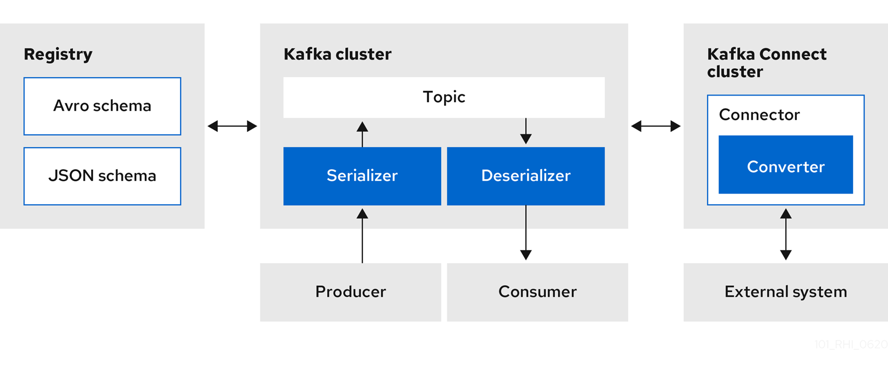

Kafka Connect converters

Apicurio Registry provides the following features for Kafka Connect:
-
Storage for Kafka Connect schemas
-
Kafka Connect converters for Apache Avro and JSON Schema
-
Registry REST API to manage schemas
You can use the Avro and JSON Schema converters to map Kafka Connect schemas into Avro or JSON schemas. Those schemas can then serialize message keys and values into the compact Avro binary format or human-readable JSON format. The converted JSON is also less verbose because the messages do not contain the schema information, only the schema ID.
Apicurio Registry can manage and track the Avro and JSON schemas used in the Kafka topics. Because the schemas are stored in Apicurio Registry and decoupled from the message content, each message must only include a tiny schema identifier. For an I/O bound system like Kafka, this means more total throughput for producers and consumers.
The Avro and JSON Schema serializers and deserializers (Serdes) provided by Apicurio Registry are also used by Kafka producers and consumers in this use case. Kafka consumer applications that you write to consume change events can use the Avro or JSON Serdes to deserialize these change events. You can install these Serdes into any Kafka-based system and use them along with Kafka Connect, and also with Kafka Connect-based systems such as Debezium and Camel Kafka Connector.